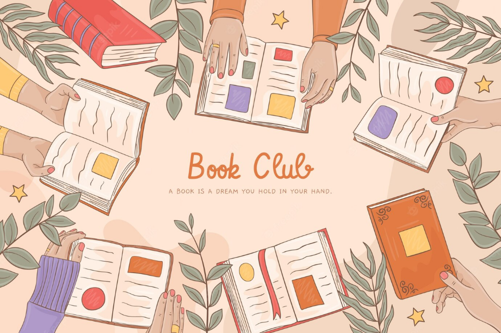

Sei appassionato di lettura? Appena finito un libro non puoi far a meno che parlarne con chiunque ti passi davanti? Ti sembra di aver letto tutti i libri interessanti e non sai come scoprirne di nuovi? O sei un lettore alle prime armi, che vuole imparare a riflettere di più su ciò che legge? In tutti questi casi, il Club del Libro di Trieste fa per te!
Siamo un gruppo di lettori che si ritrova alla fine di ogni mese per discutere del libro appena letto, e sceglierne uno per il mese successivo. Non esistono opinioni giuste, o sbagliate, intelligenti o stupide, ogni opinione è una prospettiva in più ben accetta!
Che aspetti? Unisciti a noi e leggi il libro di questo mese, e vieni a discuterne il 31 luglio in Giardino Pubblico Muzio de Tommasini! In alternativa, prova a leggerti alcune delle discussioni passate.
Registra il tuo progresso: